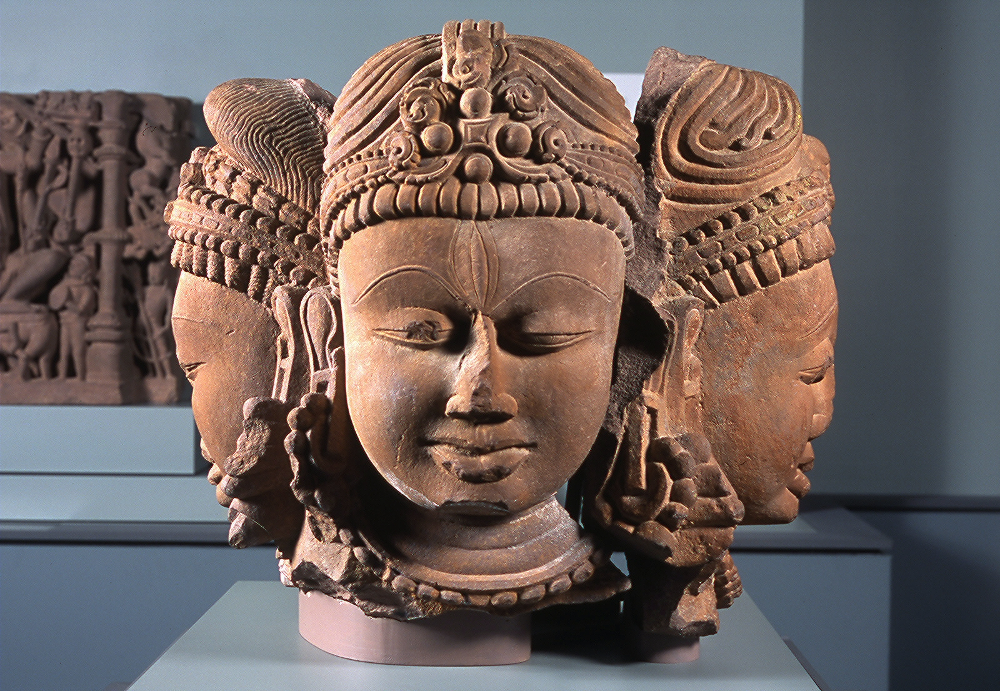
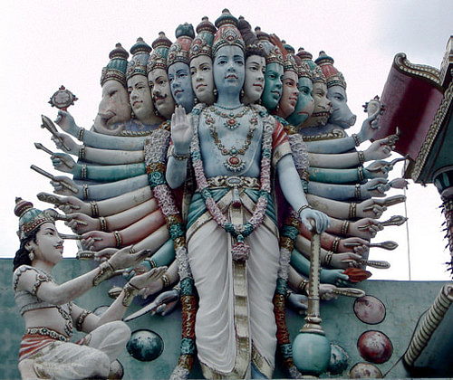
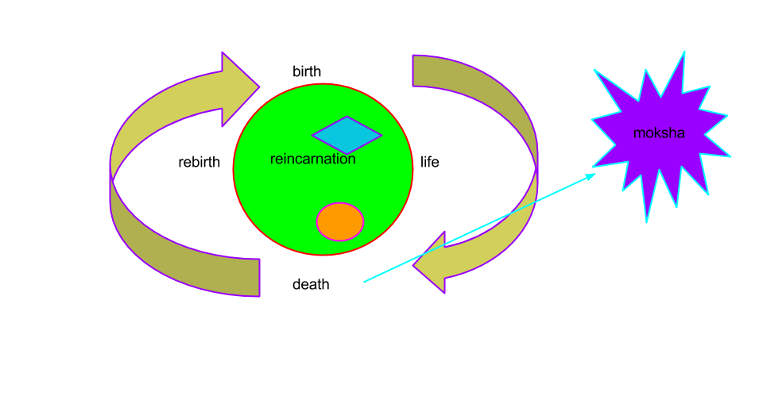
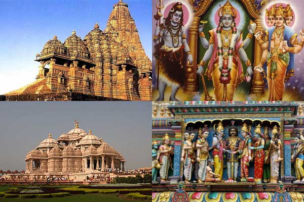
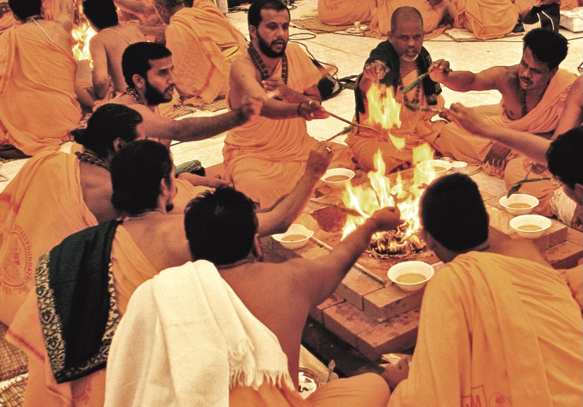
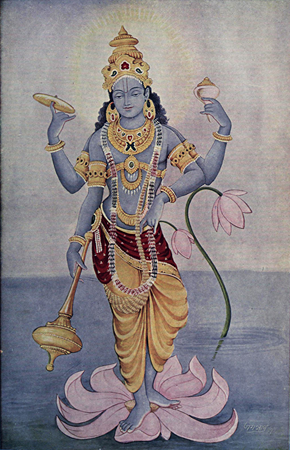

Hinduism is a collection of religious beliefs that developed slowly over a long period of time. Most aspects of the religion can be traced back to ancient times. Even today, many practices, like the sacred fire in Hindu weddings or the recitation of daily verses from the Vedas, remain unchanged.
Hindus share a common worldview. They see religion as a way of liberating the soul from the illusions, disappointments, and mistakes of everyday existence. Between 750 and 550 BC, Hindu teachers sought to interpret the hidden meaning of the Vedic hymns. These teachings were later recorded as the Upanishads, which are written as dialogues between a student and a teacher.
The Upanishads explore how one can achieve liberation from desires and suffering, a state of perfect understanding called moksha. The teachings also differentiate between atman (the individual soul) and Brahman (the world soul), explaining that everything in the world is an aspect of Brahman.
According to Hindu belief, moksha is achieved through the realization of the oneness of atman and Brahman. This understanding does not usually come in one lifetime; instead, it occurs through the cycle of reincarnation. A soul is reborn repeatedly until moksha is attained. Karma, the law of cause and effect, influences the conditions of each rebirth.
Over the centuries, Hinduism continued to evolve. The concept of Brahman, initially a formless, all-encompassing spirit, became associated with the personalities of three gods: Brahma, the creator; Vishnu, the protector; and Shiva, the destroyer. Vishnu took on many forms, including Krishna and Rama. Meanwhile, the figure of Devi, the great Mother Goddess, became increasingly significant in worship.
Modern Hindus are free to choose which deity to worship or none at all. Most follow family traditions passed down through generations. There are three primary paths to achieving moksha: right thinking, right action, and religious devotion. Hindu practices vary widely, from elaborate temple rituals to individual worship at home. Yoga, an integrated practice of physical and mental exercises, helps practitioners focus their minds and bodies on the path to moksha.
Many Hindus seek to purify their souls by bathing in the sacred waters of the Ganges River, which is believed to flow from the feet of Vishnu and over the head of Shiva. The Ganges is considered a holy river, and millions of Hindu pilgrims travel to its banks each year to cleanse themselves of bad karma.
Hindu ideas about karma and reincarnation have reinforced the caste system, where people born into higher castes are believed to have earned good karma in past lives. Conversely, those born into lower castes may be experiencing the consequences of past misdeeds. Despite this, all Hindus have the potential to achieve moksha in their current life. Over time, Hindu society has become less rigid, though caste still influences social life in some regions.
